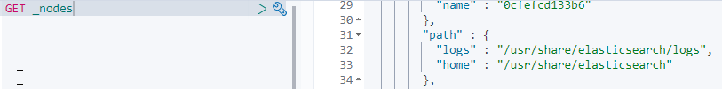
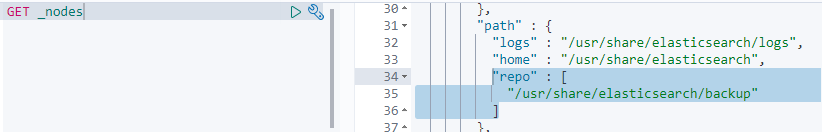
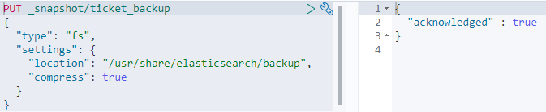
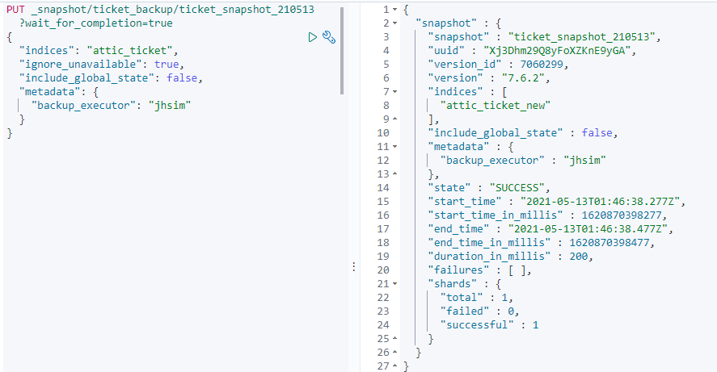
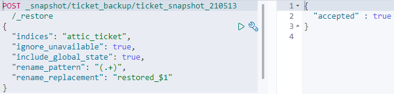
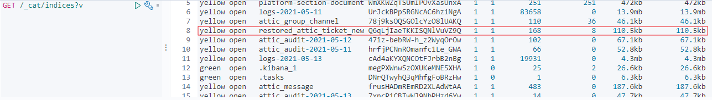
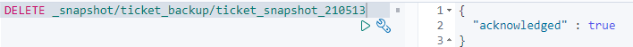

elasticsearch snapshot create/restore/delete
2022, Mar 19
elasticsearch backup
- elasticsearch snapshot 기능을 사용
(1) snapshot을 했을 경우, 저장할 repository가 필요하다.
(2) GET _nodes를 실행시켰을 때 path.repo 값이 있는지 확인한다.

(3) (2)가 없는 경우,
1) elasticsearch.yml에 아래 설정을 추가한다.
path.repo: ["/usr/share/elasticsearch/backup"]
2) docker에서 elasticsearch reload한다.
3) 다시 kibana에서 GET _nodes 호출

(4) repository의 path를 지정했으면, snapshot 리파지토리를 생성한다.
PUT _snapshot/ticket_backup
{
"type": "fs",
"settings": {
"location": "/usr/share/elasticsearch/backup", --> path.repo의 경로를 지정해준다.
"compress": true --> 압축할지 여부로, mapping데이터만 압축되고 data가 압축되는 것은 아님. 디폴트(true)
}
}

참고) elasticsearch를 재구동해도 snapshot repository가 영속되도록 하려면, volume에 path.repo를 추가해줘야한다.
(5) snapshot 생성
PUT _snapshot/ticket_backup/ticket_snapshot_210513?wait_for_completion=true // 비동기로 실행
{
"indices": "attic_ticket", // snapshop할 doc으로 , 콤마로 여러개 지정가능. alias명으로 불가
"ignore_unavailable": true, // true 값일 경우, missing되거나 closed 된 indices는 snapshot되지 않는다.(기본 값 false)
"include_global_state": false,
"metadata": {
"backup_executor": "jhsim" // 추가 정보
}
}

(6) snapshot 조회
GET _snapshot/ticket_backup/_all
(7) snapshot으로 복원
POST _snapshot/ticket_backup/ticket_snapshot_210513/_restore
{
"indices": "attic_ticket", // alias명으로 불가. 지정하지 않으면 전체를 복구한다.
"ignore_unavailable": true,
"include_global_state": true,
"rename_pattern": "(.+)",
"rename_replacement": "restored_$1" // indices 이름과 중첩불가. 다른 이름으로 해야한다.
}

** 변경된 indices로 서비스하려면, alias를 활용해서 한다.
(8) 복원 조회
GET /_cat/indices?v

(9) snapshot 삭제
DELETE _snapshot/ticket_backup/ticket_snapshot_210513

참고 사이트
https://lovekmg.github.io/2018/12/06/elasticsearch-backup-and-restore/
https://kay0426.tistory.com/46